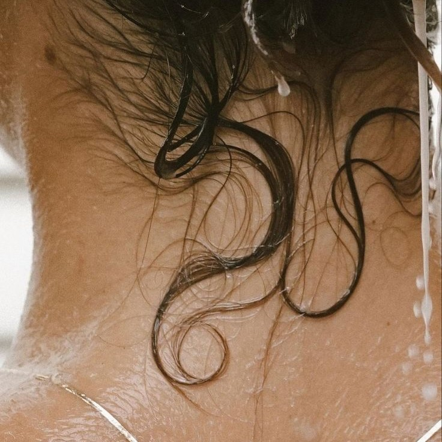

- ♥ Proteiny są składnikami, które pomagają wzmocnić i odbudować strukturę włosa.
- ♥ Wnikają w głąb włosa, wypełniając i naprawiając uszkodzone miejsca.
- ♥ Pomagają w zwiększeniu elastyczności i wytrzymałości włosa.
- ♥ Mogą pochodzić z różnych źródeł, takich jak keratyna, jedwab, kolagen itp.
- ♥ Emolienty to substancje, które nawilżają i wygładzają włosy.
- ♥ Tworzą ochronną warstwę na powierzchni włosa, zapobiegając utracie wilgoci.
- ♥ Pomagają w wygładzaniu łusek włosa, co sprawia, że włosy są bardziej miękkie i bardziej podatne na układanie.
- ♥ Przykłady emolientów to oleje roślinne, masła, silikony i gliceryna.
- ♥ Humektanty to substancje, które przyciągają wilgoć z otoczenia i zatrzymują ją wewnątrz włosów.
- ♥ Pomagają w utrzymaniu odpowiedniego poziomu nawilżenia włosa.
- ♥ Zapobiegają nadmiernemu przesuszeniu włosów.
- ♥ Przykłady humektantów to gliceryna, pantenol, miód i aloes.
